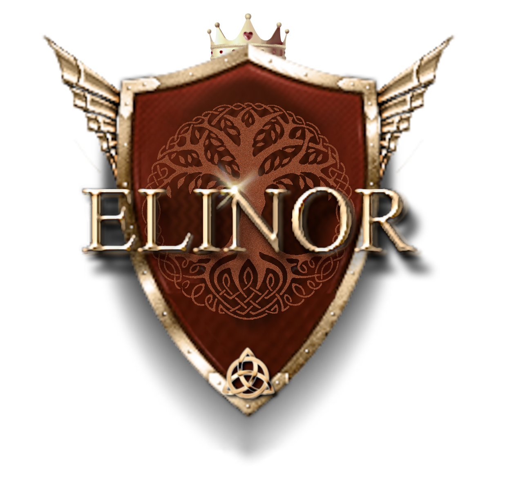
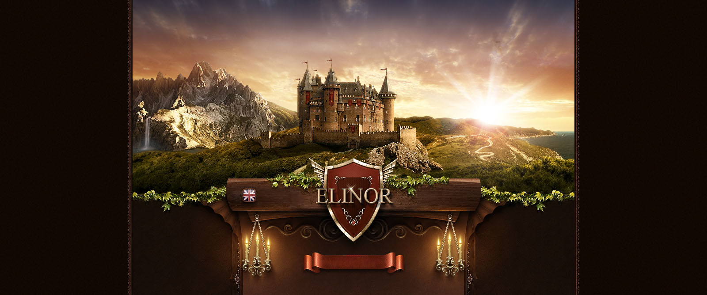

Bylo nebylo, za devatero horami a devatero řekami, v jednom malém moravském království se narodila princezna Elinor…
Elinor Marsi je zpěvačka a skladatelka, jejíž písně vyrůstají z lásky k přírodě, keltské a indiánské inspirace a z cesty osobního rozvoje. První písně skládala už ve čtyřech letech, vyrostla na muzikálové a klasické hudbě a dnes tvoří pop s příměsí žánrů podle aktuální nálady — vždy s poselstvím, že štěstí je volba.
Na pódiu ji doprovází kapela; společně přinášejí publiku energii, něhu i příběhy, které se dotýkají duše.
Vlastní technika ručně zpracovaného umělého pískovce — erby, sochy a ornamenty na sochaz.cz.
Autorka mystické knihy Osudné jezero; připravuje veršovaný román Srdce s hříchem v erbu.
Vlastní módní styl spojující krásu renesanční módy s praktičností té moderní.
Oficiální videoklip · nový singl 2026
Oficiální videoklip
Oficiální živý záznam
Oficiální živý záznam
Momentky z vystoupení
Živý svatební cover s improvizovanou kapelou




Zpěv + doprovodná kapela; varianta sólo/duo na vyžádání.
Kompletní požadavky na PA, monitory a mikrofonní vstupy v dokumentu.
Rozmístění na pódiu včetně zapojení a rozměrů.
Světelné nálady k písním a požadavky na šatnu.
Dokument bude doplněn — tlačítko je připraveno.
Nové písně a termíny koncertů jednou za čas do vaší schránky.